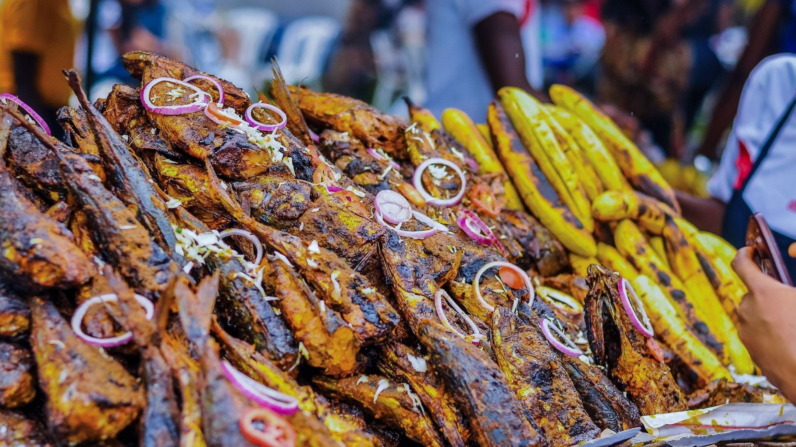
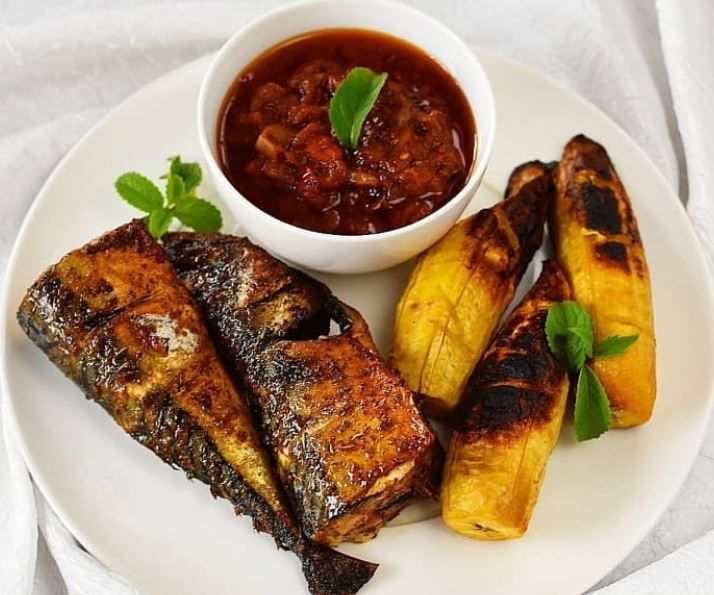
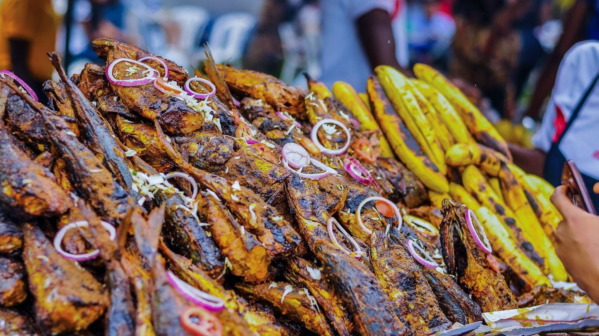
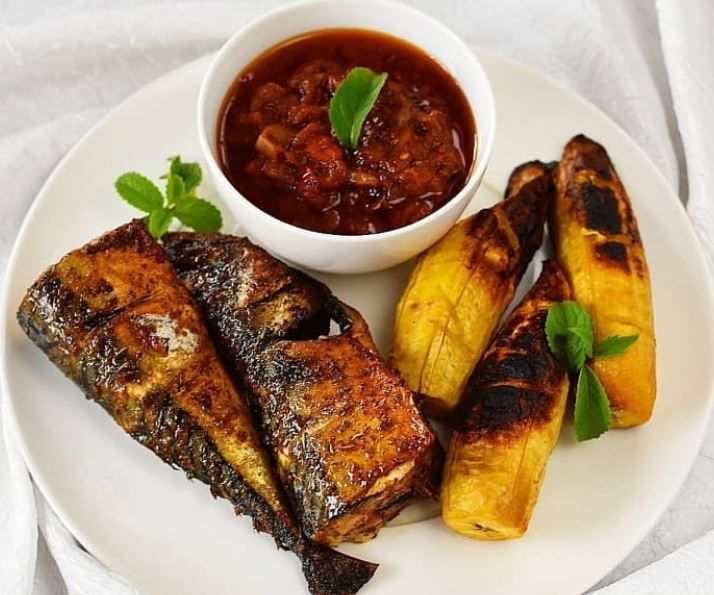

Welcome to Port Harcourt...the capital of Bole
You have not truly been to Port Harcourt if you have not tasted our bole
What is Bole?
Bole is a special delicacy found in Port Harcourt that comprises of roasted plantain, yam or potato, a spicy sauce, roasted fish, and a sprinkling of onions with or without utazi. Here in Port Harcourt, Bole has been overhauled from the standard road bite to the quintessential dish, arranged and presented with different dishes that mix to make a definitive sustenance combo.
 


